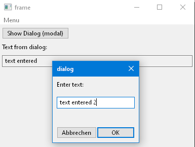
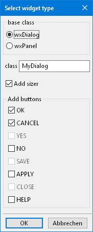

Dialogs¶
Most applications consist of a ‘permanent’ main window - typically a frame - and ‘temporary’ dialogs.
See wxglade/examples/dialog for an example application how to create and use dialogs.
The example opens the dialog on pressing a button or selecting a menu entry.
|  |
When you add a new dialog , you will be offered to add some default buttons like OK and Cancel:
|  |
These will be placed in a StdDialogButtonSizer which will arrange the buttons such that the ordering matches the OS style guide.
Also, the buttons will use StockItems and e.g. button.SetDefault,
dialog.SetAffirmativeId and dialog.SetEscapeId will be called.
These are the generated lines of code that are specific for stock item buttons and using them in a dialog:
sizer_2 = wx.StdDialogButtonSizer()
...
self.button_OK = wx.Button(self, wx.ID_OK, "")
self.button_OK.SetDefault()
sizer_2.AddButton(self.button_OK)
self.button_CANCEL = wx.Button(self, wx.ID_CANCEL, "")
sizer_2.AddButton(self.button_CANCEL)
sizer_2.Realize()
...
self.SetAffirmativeId(self.button_OK.GetId()) # select this button when Enter is hit
self.SetEscapeId(self.button_CANCEL.GetId()) # select this button when Escape is hit
The dialog is created and used like this:
with MyDialog(self) as dlg:
# fill dialog widgets with values here
# show as modal dialog
if dlg.ShowModal() == wx.ID_OK:
print("User has hit OK")
Please note that the dialog in the example file does not have the size property defined. Therefore the dialog will be created with the minimum size that fits the content.
- The files can be found in the folder
wxglade/examples/dialog:

{kind=link}
{kind=link}